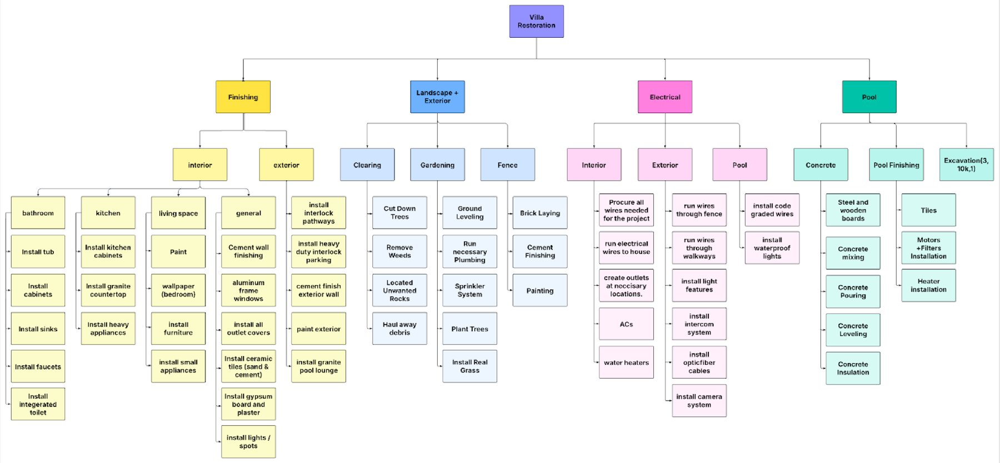
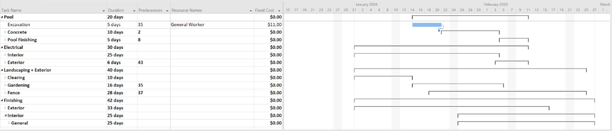
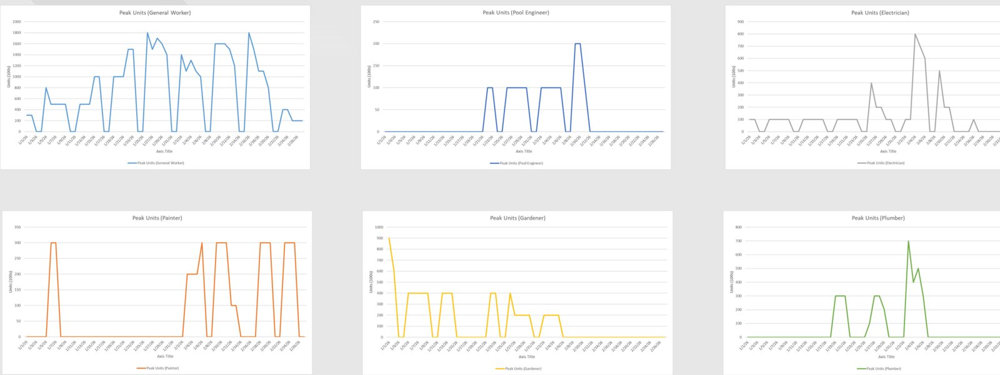
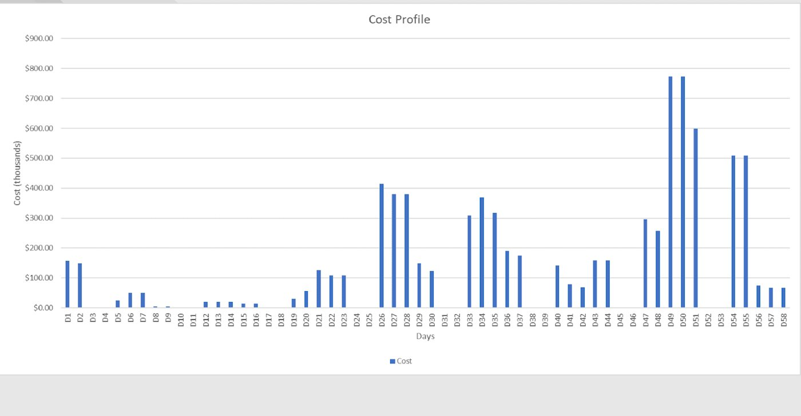

MENG 3446 Project Management · Fall 2025
Villa restoration project plan
A full project plan for restoring an abandoned villa: the scope, schedule, cost, risks and quality for a 300 m² house, a 2,000 m² garden and a new pool.
What it is
The group project for MENG 3446 Project Management: plan a real job from start to finish. Our group of five planned the restoration of an abandoned single-storey villa: renovate the 300 m² house, redo the 2,000 m² garden and build a 30 m³ pool, within 9 million EGP and with no one hurt.
What we built
The plan covers the whole project: the work breakdown, the schedule, the cost and resource plans, a risk register, a quality plan, and the procurement, communication and stakeholder plans.

The 16 risks were scored by likelihood and impact and each got a response: 5 eliminated, 3 reduced, 4 passed on (for example to suppliers), and 4 accepted with a contingency.
What I did
We split the work by who was most interested in, and best at, each part. I built the schedule, the cost plan and the resource plans: every task with its duration and predecessors in MS Project, then how many of each trade we need each day and how much is spent each day.


